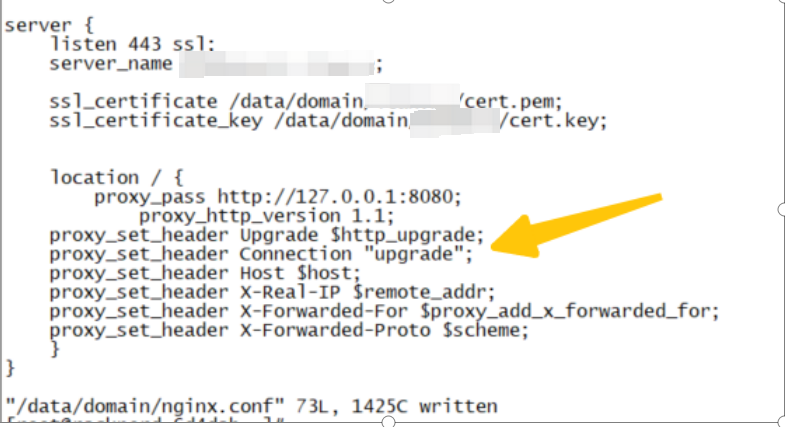
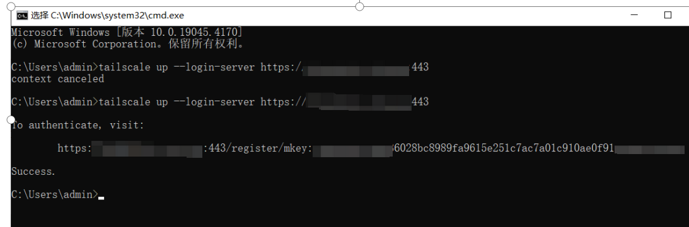
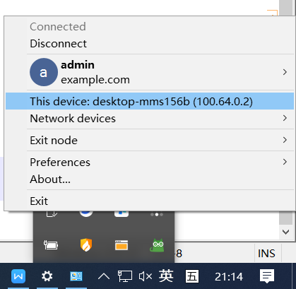
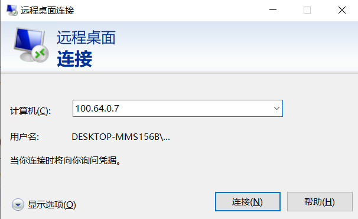
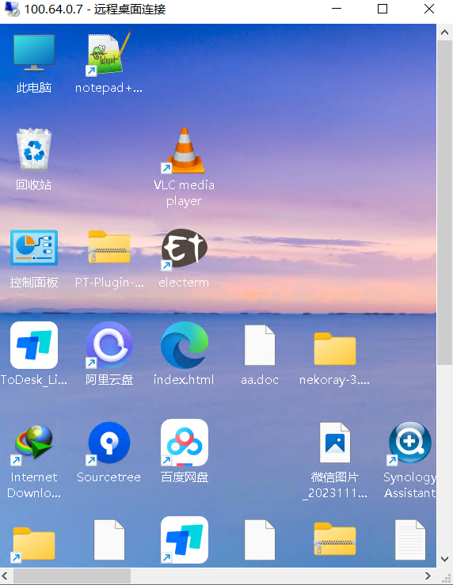

Server setup process using Headscale with Docker.
Server setup process using Headscale with Docker.⌗
记录采用headscale & docker 异地组网过程⌗
需求背景⌗
曾经我尝试使用
ZeroTier，最初的体验非常不错。然而，随着时间的推移，我发现连接速度变得缓慢和卡顿， 有时甚至需要借助特殊的网络加速技术来提高性能。后来，在X社区中，我看到有人分享了Tailscale的好评， 这促使我安装了Tailscale的官方客户端。相较于ZeroTier，Tailscale在速度上有显著的提升， 尽管偶尔也会遇到一些延迟。Tailscale依赖于其官方服务器，但它支持用户自建服务器， 这一点非常吸引我。通过结合使用Tailscale客户端和官网，我们可以实现异地组网。 为了达到更理想的连接速度，我决定自建异地组网系统。这样不仅能控制家中的群晖设备，还能优化PT下载等功能。
搭建headscale服务端⌗
1,准备环境
linux(centos7/ubuntu)
2,安装docker,
3,申请好域名,准备https证书 推荐cf,并解析到自己的服务器
ssl_certificate和ssl_certificate_key为自己申请的域名证书从cf导出来的文件
4,安装好nginx,nginx配置如下,打码地方为自己的域名，箭头处需要开启websocket

准备headscale 配置文件⌗
创建目录
mkdir -p /root/mydocker/config
chmod -R a+x /root/mydocker/config
从以下链接地址下载配置文件
wget -O /root/mydocker/conf/config.yaml https://raw.githubusercontent.com/juanfont/headscale/main/config-example.yaml
修改配置文件
config.yaml文件
server_url: https://你的域名:443
listen_addr: 0.0.0.0:8080
metrics_listen_addr: 0.0.0.0:9090
noise:
private_key_path: /etc/headscale/noise_private.key
database:
type: sqlite3
sqlite:
path: /etc/headscale/db.sqlite
部署headscale⌗
启动docker, 我是在/root/mydocker/ 目录启动的
docker run --name headscale --detach --volume $(pwd)/config:/etc/headscale/ --publish 0.0.0.0:8080:8080 --publish 0.0.0.0:9090:9090 headscale/headscale:0.23.0-alpha5 serve
在windows或客户端安装tailscale(官网下载并安装好)⌗
以win10 为例 直接采用命令行登录

会得到以下地址:
https://你的域名:443/register/mkey:23234kflasdjf….. mkey 后面请复制一下 进入到headscale 服务器命令行，执行以下命令，将23234kflasdjf.....注册即可
进入服务器,执行命令注册登录的设备⌗
执行以下命令，因为是docker安装的
mywin10 就表示对应需要组网的机器
docker exec headscale headscale users create mywin10
docker exec headscale headscale nodes register --user admin --key mkey:23234kflasdjf.....
以下是我执行的上面两条docker命令的示例
[root@racknerd-6d4dab3 ~]# docker exec headscale headscale users create admin
2024-04-08T12:28:08Z TRC DNS configuration loaded dns_config={"Nameservers":["1.1.1.1"],"Proxied":true,"Resolvers":[{"Addr":"1.1.1.1"}]}
User created
[root@racknerd-6d4dab3 ~]# docker exec headscale headscale nodes register --user admin --key mkey:2342342344444444444444fb3ce635336028bc8989fa9615e233343434
2024-04-08T12:28:14Z TRC DNS configuration loaded dns_config={"Nameservers":["1.1.1.1"],"Proxied":true,"Resolvers":[{"Addr":"1.1.1.1"}]}
Node desktop-mms156b registered
接下来就看到以下成功信息
tailscale 客户端自动显示当前状态

接下来就可以远程登录我的win10了，我要从100.64.0.2 的机器远程登录100.64.0.7的机器

远程登录win10 速度很赞，几乎和本地一样操作流畅，而且无需科学
